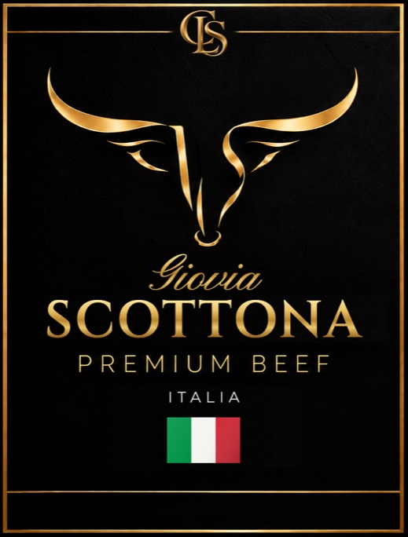
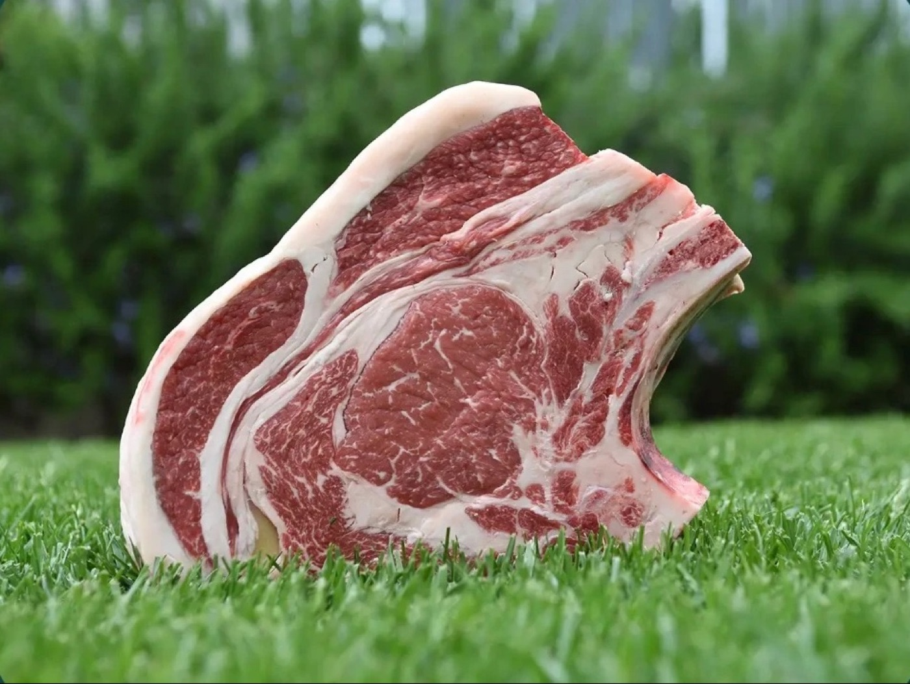
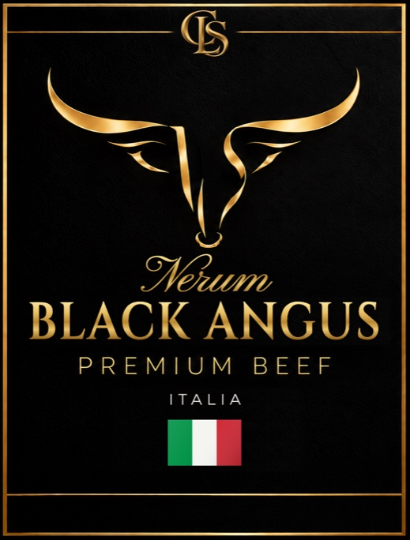
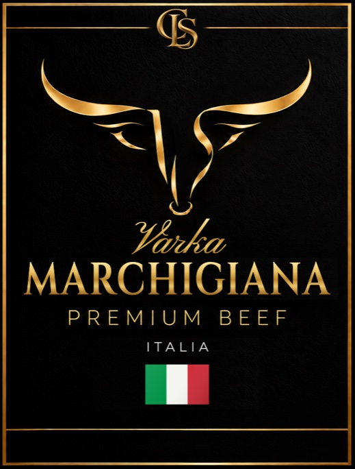
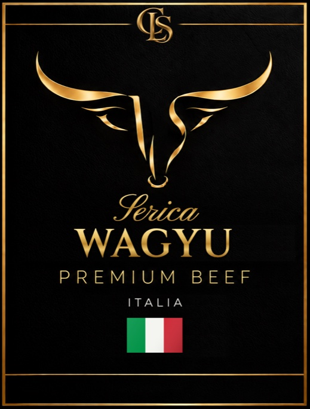
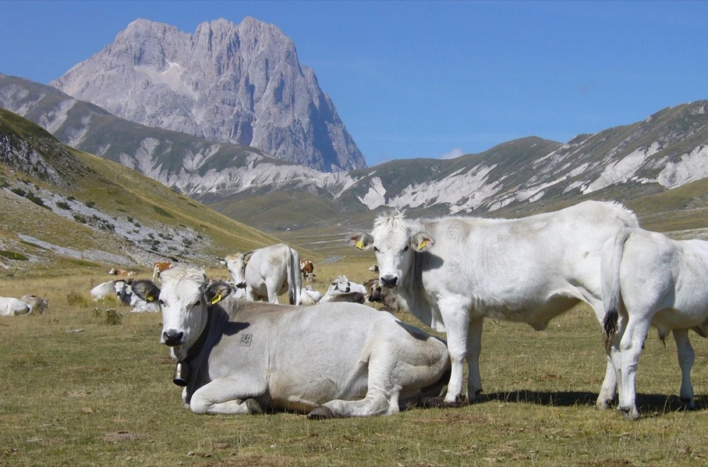
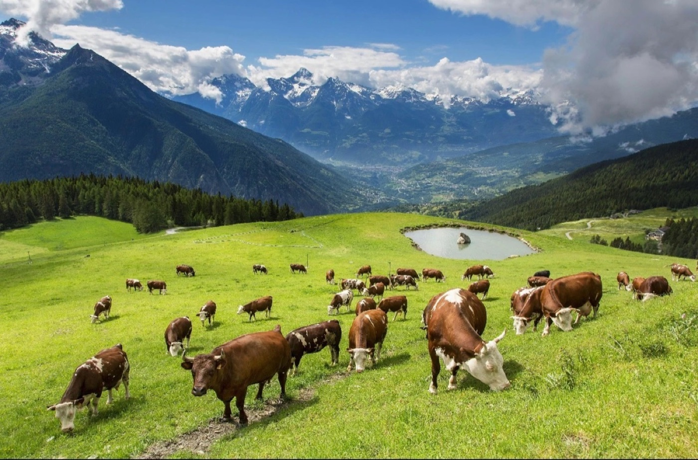

Linea 04 · Giovia
Scottona
Giovane femmina che non ha mai partorito. Carne tenera e fine, con una leggera infiltrazione di grasso.
TeneraVersatile

Selezione italiana
Accanto alle carni galiziane selezioniamo carne bovina italiana da allevatori di fiducia: quattro proposte diverse per sapore, marezzatura e utilizzo in cucina.

Giovane femmina che non ha mai partorito. Carne tenera e fine, con una leggera infiltrazione di grasso.

Razza di origine scozzese allevata in Italia. Carne succosa e ben marezzata, ideale alla griglia.

Razza autoctona dell'Appennino centrale. Carne magra, compatta e saporita.

Wagyu allevato in Italia. Marezzatura intensa e consistenza burrosa, per la carta più esclusiva.


Solo operatori professionali